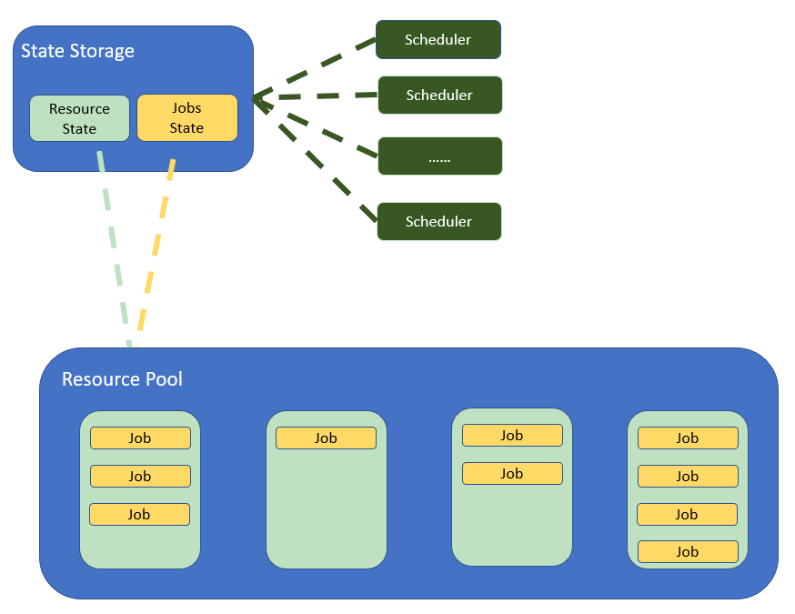
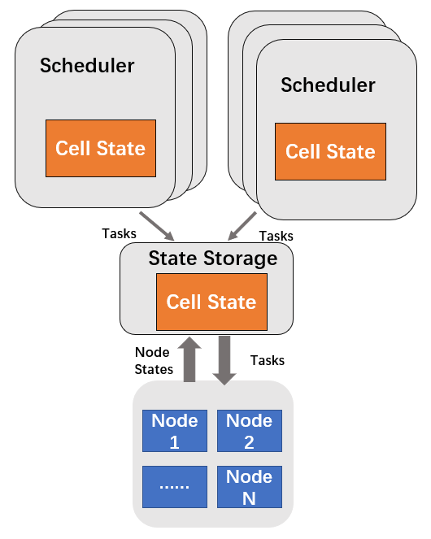
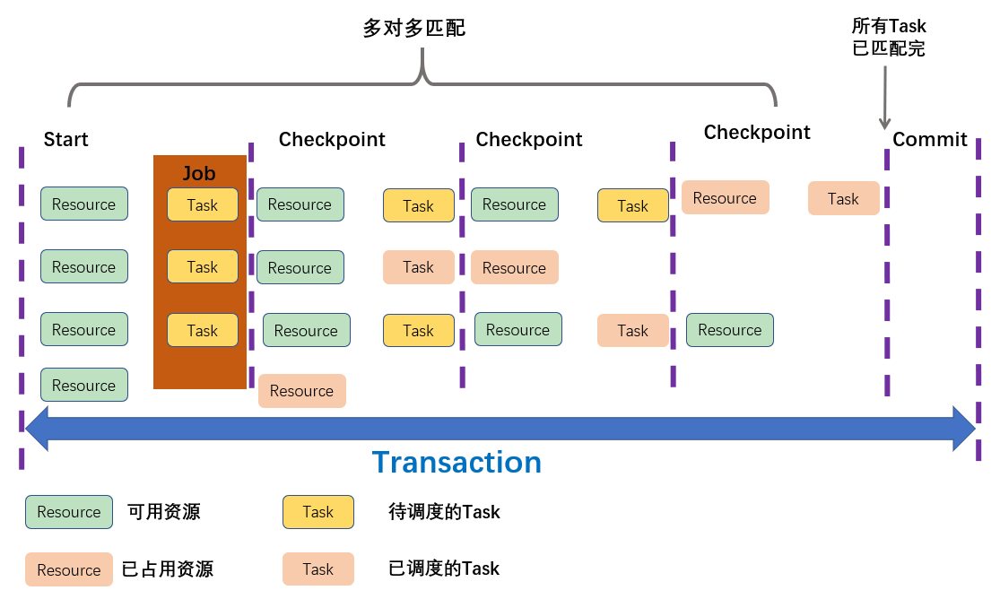
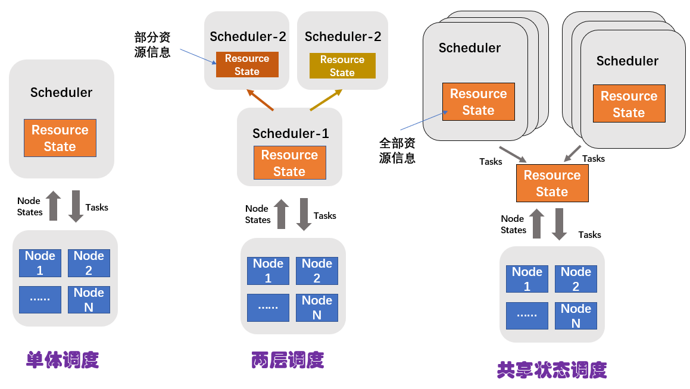
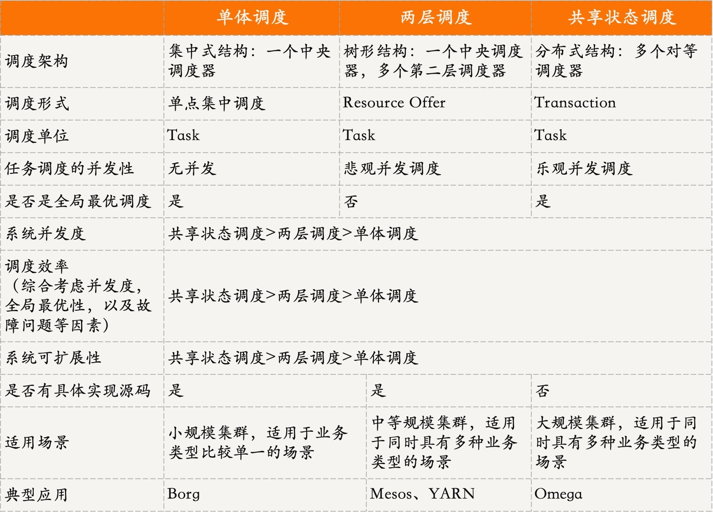
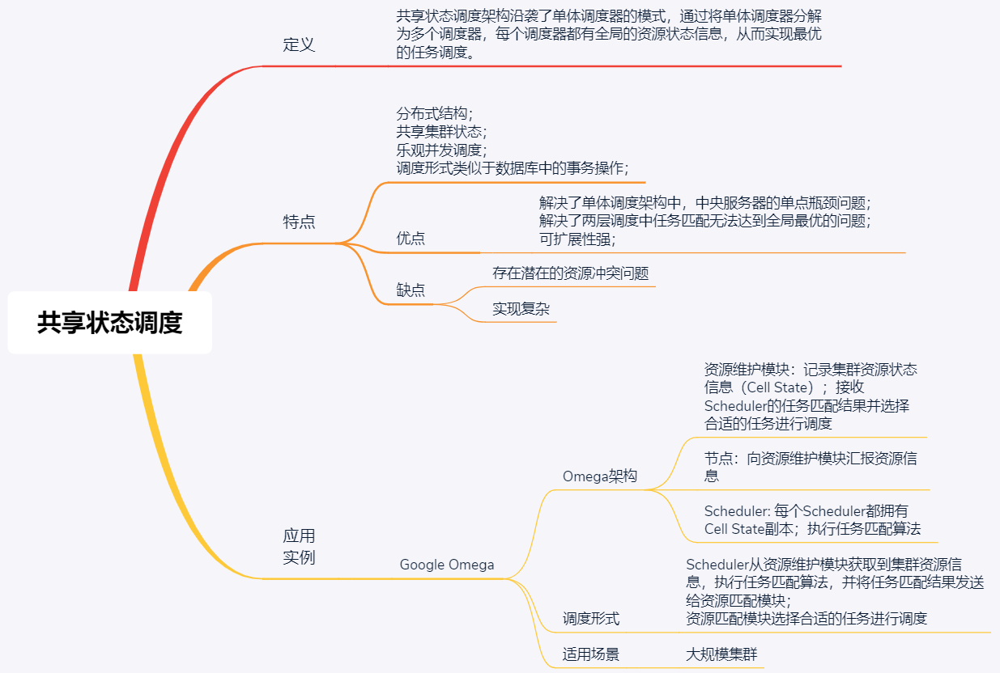

- 00 开篇词 四纵四横，带你透彻理解分布式技术.md.html
- 01 分布式缘何而起：从单兵，到游击队，到集团军.md.html
- 02 分布式系统的指标：啥是分布式的三围.md.html
- 03 分布式互斥：有你没我，有我没你.md.html
- 04 分布式选举：国不可一日无君.md.html
- 05 分布式共识：存异求同.md.html
- 06 分布式事务：All or nothing.md.html
- 07 分布式锁：关键重地，非请勿入.md.html
- 08 分布式技术是如何引爆人工智能的？.md.html
- 09 分布式体系结构之集中式结构：一人在上，万人在下.md.html
- 10 分布式体系结构之非集中式结构：众生平等.md.html
- 11 分布式调度架构之单体调度：物质文明、精神文明一手抓.md.html
- 12 分布式调度架构之两层调度：物质文明、精神文明两手抓.md.html
- 13 分布式调度架构之共享状态调度：物质文明、精神文明多手协商抓.md.html
- 14 答疑篇：分布式事务与分布式锁相关问题.md.html
- 15 分布式计算模式之MR：一门同流合污的艺术.md.html
- 16 分布式计算模式之Stream：一门背锅的艺术.md.html
- 17 分布式计算模式之Actor：一门甩锅的艺术.md.html
- 18 分布式计算模式之流水线：你方唱罢我登场.md.html
- 19 分布式通信之远程调用：我是你的千里眼.md.html
- 20 分布式通信之发布订阅：送货上门.md.html
- 21 分布式通信之消息队列：货物自取.md.html
- 22 答疑篇：分布式体系架构与分布式计算相关问题.md.html
- 23 CAP理论：这顶帽子我不想要.md.html
- 24 分布式数据存储系统之三要素：顾客、导购与货架.md.html
- 25 数据分布方式之哈希与一致性哈希：“掐指一算”与“掐指两算”的事.md.html
- 26 分布式数据复制技术：分身有术.md.html
- 27 分布式数据之缓存技术：“身手钥钱”随身带.md.html
- 28 分布式高可靠之负载均衡：不患寡，而患不均.md.html
- 29 分布式高可靠之流量控制：大禹治水，在疏不在堵.md.html
- 30 分布式高可用之故障隔离：当断不断，反受其乱.md.html
- 31 分布式高可用之故障恢复：知错能改，善莫大焉.md.html
- 32 答疑篇：如何判断并解决网络分区问题？.md.html
- 33 知识串联：以购买火车票的流程串联分布式核心技术.md.html
- 34 搭建一个分布式实验环境：纸上得来终觉浅，绝知此事要躬行.md.html
- 特别放送 Jackey：寄语天涯客，轻寒底用愁.md.html
- 特别放送 分布式下的一致性杂谈.md.html
- 特别放送 崔新：追根溯源，拨开云雾见青天.md.html
- 特别放送 徐志强：学习这件事儿，不到长城非好汉.md.html
- 特别放送 那些你不能错过的分布式系统论文.md.html
- 结束语 为什么说提升职业竞争力要从尊重、诚实开始？.md.html
- 捐赠
13 分布式调度架构之共享状态调度：物质文明、精神文明多手协商抓
你好，我是聂鹏程。今天，我来继续带你打卡分布式核心技术。
在上一篇文章中，我们一起学习了两层调度。在两层调度架构中，第二层调度只知道集群中的部分资源，无法进行全局最优调度。那么，是否有办法解决全局最优调度的问题呢？
答案是肯定的，解决办法就是我今天要带你打卡的共享状态调度。
接下来，我们就一起看看共享状态调度到底是什么，以及它的架构和工作原理吧。
什么是共享状态调度？
通过我们前两篇文章的讲述，不难发现，集群中需要管理的对象主要包括两种：
- 一是，资源的分配和使用状态；
- 二是，任务的调度和执行状态；
在单体调度中，这两种对象都是由单体调度器管理的，因此可以比较容易地保证全局状态的一致性，但问题是可扩展性较差（支持业务类型受限），且存在单点瓶颈问题。
而在两层调度中，这两种对象分别由第一层中央调度器和第二层Framework调度器管理，由于Framwork调度器只能看到部分资源，因此不能保证全局状态的一致性，也不容易实现全局最优的调度。
为了解决这些问题，一种新的调度器架构被设计了出来。这种架构基本上沿袭了单体调度器的模式，通过将单体调度器分解为多个调度器，每个调度器都有全局的资源状态信息，从而实现最优的任务调度，提供了更好的可扩展性。
也就是说，这种调度架构在支持多种任务类型的同时，还能拥有全局的资源状态信息。要做到这一点，这种调度架构的多个调度器需要共享集群状态，包括资源状态和任务状态等。因此，这种调度架构，我们称之为共享状态调度器。
如果我们继续把资源比作物质文明、把任务比作精神文明的话，相对于单体调度和两层调度来说，共享状态调度就是“物质文明与精神文明多手协商抓”。
共享状态调度架构的示意图，如下所示：

可以看出，共享状态调度架构为了提供高可用性和可扩展性，将集群状态之外的功能抽出来作为独立的服务。具体来说就是：
- State Storage模块（资源维护模块）负责存储和维护资源及任务状态，以便Scheduler查询资源状态和调度任务；
- Resource Pool即为多个节点集群，接收并执行Scheduler调度的任务；
- 而Scheduler只包含任务调度操作，而不是像单体调度器那样还需要管理集群资源等。
共享状态调度也支持多种任务类型，但与两层调度架构相比，主要有两个不同之处：
- 存在多个调度器，每个调度器都可以拥有集群全局的资源状态信息，可以根据该信息进行任务调度；
- 共享状态调度是乐观并发调度，在执行了任务匹配算法后，调度器将其调度结果提交给State Storage，由其决定是否进行本次调度，从而解决竞争同一种资源而引起的冲突问题，实现全局最优调度。而，两层调度是悲观并发调度，在执行任务之前避免冲突，无法实现全局最优匹配。
看到这里，我再和你说说乐观并发调度和悲观并发调度的区别吧。
乐观并发调度，强调事后检测，在事务提交时检查是否避免了冲突：若避免，则提交；否则回滚并自动重新执行。也就是说，它是在执行任务匹配调度算法后，待计算出结果后再进行冲突检测。
悲观并发调度，强调事前预防，在事务执行时检查是否会存在冲突。不存在，则继续执行；否则等待或回滚。也就是说，在执行任务匹配调度算法前，通过给不同的Framework发送不同的资源，以避免冲突。
现在，我们已经对共享状态调度有了一个整体印象，知道了它可以解决什么问题。那么接下来，我们再看看这种调度架构是如何设计的吧。
共享状态调度设计
共享状态调度的理念最早是Google针对两层调度器的不足，提出的一种调度架构。这种调度结构的典型代表有Google的Omega、微软的Apollo，以及Hashicorp的Nomad容器调度器。
作为Google公司的第二代集群管理系统，Omega在设计时参考了Borg的设计，吸收了Borg的优点，并改进了其不足之处。所以接下来，我就以Omega为例和你讲述共享状态调度的架构和工作原理吧。这样一来，你可以对照着第11篇文章中Borg的调度设计一起理解。
Omega调度架构
Omega集群中有一个“Cell”的概念，每个Cell管理着部分物理集群，一个集群有多个Cell。实际上，你可以直接将这里的“Cell”理解为一个集群的子集群或子节点的集合。
Omega集群的调度架构示意图，如下所示。

我在介绍共享状态调度的架构时提到，State Storage模块负责存储和维护资源及任务状态，里面有一个Cell State文件，记录着全局共享的集群状态。实际上，State Storage组件中的集群资源状态信息，就是主本，而Cell State就是以主副本的形式存在的。每个调度器都包含一个私有的Cell State副本，也就是拥有了一个集群资源状态信息的副本，进而达到了共享集群资源状态信息的目的。
在Omega系统中，没有中央资源分配器，所有资源分配决策都在调度器（Scheduler）中进行。每个调度器都可以根据私有的Cell State副本，来制定调度决策。
调度器可以查看Cell的整个状态，并申请任何可用的集群资源。一旦调度器做出资源调度决策，它就会在原子提交中更新本地的Cell State的资源状态副本。若同时有多个调度器申请同一份资源，State Storage模块可以根据任务的优先级，选择优先级最高的那个任务进行调度。
可以看出，在Omega系统中的每个调度器，都具有对整个集群资源的访问权限，从而允许多个调度器自由地竞争空闲资源，并在更新集群状态时使用乐观并发控制来调解资源冲突问题。
这样一来，Omega就有效地解决了两层调度中Framework只拥有局部资源，无法实现全局最优的问题。
接下来，我们看一下Omega共享调度的工作原理吧。
Omega共享调度工作原理
Omega 使用事务管理状态的设计思想，将集群中资源的使用和任务的调度类似于基于数据库中的一条条事务（Transaction）一样进行管理。显然，数据库是一个共享的状态，对应Omega中的Cell State，而每个调度器都要根据数据库的信息（即集群的资源信息）去独立完成自己的任务调度策略。
接下来，我们就具体看看吧。
如下图所示，在一个应用执行的过程中，调度器会将一个Job中的所有Task与Resource进行匹配，可以说Task与Resource之间是进行多对多匹配的。其间，调度器会设置多个Checkpoint来检测Resource是否都已经被占用，只有这个Job的所有Task可以匹配到可用资源时，这个Job才可以被调度。
这里的Job相当于一个事务，也就是说，当所有Task匹配成功后，这个事务就会被成功Commit，如果存在Task匹配不到可用资源，那么这个事务需要执行回滚操作，Job调度失败。

无论事务是否执行成功，调度器都会在事务执行之后，重新从主本那里同步更新本地Cell State的资源状态副本，以保证本地集群信息状态的有效性。若事务未成功执行，则调度器会在必要时重新运行其调度算法并再次尝试申请资源。
也就是说，调度器对Job的调度是具有原子性的，一个Job的所有Task都是一起调度的，即使部分Task调度失败了，调度器再次调度时也必须再次调度整个Job。多个调度器可以并行调度，无需等待其他调度器调度结果，若存在冲突时，进行冲突处理，比如根据Job的优先级，优先级高则获得资源。
由此我们可以看到，Omega涉及了Job并发调度。针对这一点，Omega采用了传统数据库中的乐观锁（MVCC，Multi-Version Concurrency Control，基于多版本的并发访问控制），即每一个应用都发放了所有的可用资源，在更新集群状态时使用乐观并发控制来解决资源冲突问题，来提高Omega的并发度。
不同的Omega调度器可以实现不同的策略，但有一些调度规则是所有调度器必须达成一致的，比如哪些资源是允许分配的、如何评估作业的优先级等。
因此，Omega调度器将两层调度器中的集中式资源调度模块简化成了一些持久化的共享数据（状态）和针对这些数据的验证代码。而这里的“共享数据”，实际上就是整个集群的实时资源状态信息，而验证代码就是解决调度冲突的调度规则。
知识扩展：单体调度、两层调度和共享调度的区别是什么？
现在，我已经带你学习了单体调度、双层调度和共享调度，那么这三种调度的区别是什么呢？接下来，我们就一起回忆并对比下吧。
我把这三种调度的架构示意图放到一起，先帮你有一个整体认识。

单体调度，是由一个中央调度器去管理整个集群的资源信息和任务调度，也就是说所有任务只能通过中央调度器进行调度。
这种调度架构的优点是，中央调度器拥有整个集群的节点资源信息，可以实现全局最优调度。但它的缺点是，无调度并发性，且中央服务器存在单点瓶颈问题，导致支持的调度规模和服务类型受限，同时会限制集群的调度效率。因此，单体调度适用于小规模集群。
两层调度，是将资源管理和任务调度分为两层来调度。其中，第一层调度器负责集群资源管理，并将可用资源发送给第二层调度；第二层调度接收到第一层调度发送的资源，进行任务调度。
这种调度架构的优点是，避免了单体调度的单点瓶颈问题，可以支持更大的服务规模和更多的服务类型。但其缺点是，第二层调度器往往只对全局资源信息有部分可观察性，因此任务匹配算法无法实现全局最优。双层调度适用于中等规模集群。
共享状态调度，多个调度器，每个调度器都可以看到集群的全局资源信息，并根据这些信息进行任务调度。相较于其他两个调度架构来说，共享状态调度架构适用的集群规模最大。
这种调度架构的优点是，每个调度器都可以获取集群中的全局资源信息，因此任务匹配算法可以实现全局最优性。但，也因为每个调度器都可以在全局范围内进行任务匹配，所以多个调度器同时调度时，很可能会匹配到同一个节点，从而造成资源竞争和冲突。
虽然Omega的论文宣称可以通过乐观锁机制，避免冲突。但在工程实践中，如果没有妥善处理资源竞争的问题，则很可能会产生资源冲突，从而导致任务调度失败。这时，用户就需要对调度失败的任务进行处理，比如重新调度、任务调度状态维护等，从而进一步增加了任务调度操作的复杂度。
我将单体调度、两层调度、共享状态调度总结在了一张表格中：

总结
今天，我主要与你分享了分布式调度架构设计中的共享状态调度。我们一起来总结下今天的核心知识点吧。
首先，我讲述了什么是共享状态调度。概括地说，共享状态调度是将单体调度器分解为多个服务，由多个服务共享集群状态，包括资源状态和任务状态等。
接下来，我以Google的Omega集群管理系统为例，和你分享了共享状态调度的架构和工作原理。共享状态调度包含多个调度器，每个调度器都可以看到集群的全局资源信息，并根据这些信息进行任务调度。
最后，我要和你说明的是，共享状态调度是乐观并发调度，调度器将其调度的结果以原子的方式提交给资源维护模块，由其决定是否进行本次调度。
接下来，我整理一张思维导图来帮助你巩固今天的核心知识点。

我想让你知道的是，在分布式领域中，共享状态调度，是Google号称的下一代集群管理系统Omega的调度机制，可以解决双层调度无法实现全局最优的问题，同时也避免了单体调度的单点瓶颈问题。
但，说到这儿你可能会回想起曾经看到的两句话：
- 为了达到设计目标，Omega 的实现逻辑变得越来越复杂。 在原有的 Borg 共享状态模型已经能满足绝大部分需要的情况下，Omega 的前景似乎没有那么乐观。
- Omega系统缺点是，在小集群下没有优势。
这里，我再与你解释下，为什么说Omega是Google准备打造的下一代集群管理系统。
从调度架构方面来看，Borg无法支持同时存在多种业务类型的场景，并且存在单点瓶颈问题。而Omega解决了Borg的这两个问题，但是当多个调度器并行调度时，可能存在资源冲突，当资源申请产生冲突时，会导致大量任务或任务多次调度失败，增加了任务调度失败的故障处理的复杂度，比如需要进行作业回滚、任务状态维护等。
因此，设计一个好的冲突避免策略是共享状态调度的关键。对于小规模集群来说，其集群规模、任务数量等都不大，使用单体调度就可以满足其任务调度的需求，避免了考虑复杂的冲突避免策略。也就是说，共享状态调度比较适合大规模、同时存在多种业务类型的场景，不太适合小规模集群。
思考题
共享状态调度的核心是解决并发冲突，那你认为有没有什么好的方法可以解决冲突呢？
我是聂鹏程，感谢你的收听，欢迎你在评论区给我留言分享你的观点，也欢迎你把这篇文章分享给更多的朋友一起阅读。我们下期再会！
© 2019 - 2023 Liangliang Lee. Powered by gin and hexo-theme-book.